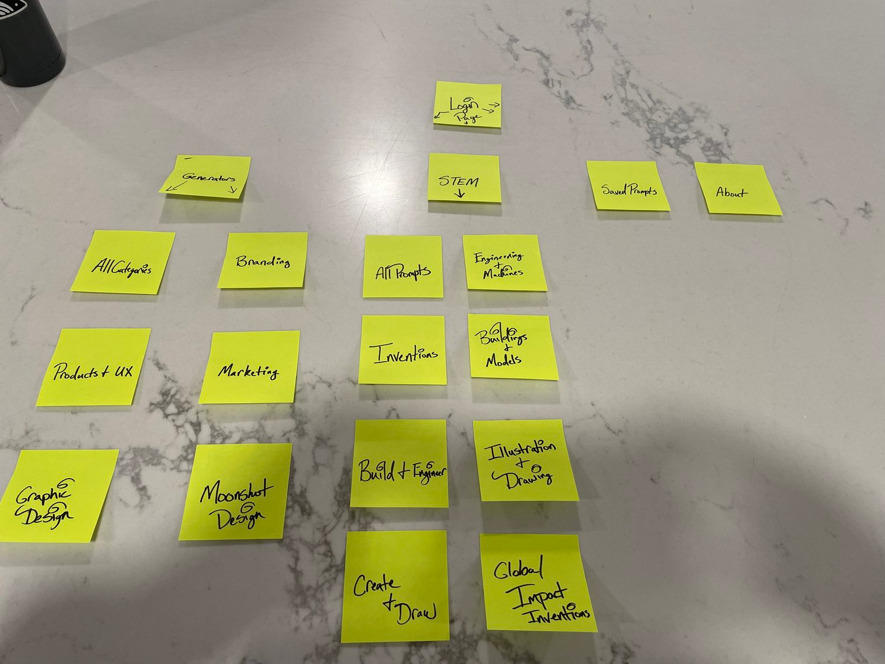

Excuse the mess. I just got here.
Lofi Sketches
After creating the sitemap, I did rough sketches on paper while considering the insights I found from my research. I noted possible changes needed and then brought the ideations to life in Figma.

Prompt generator app design
September 2023 - October 2023
Lead UX designer designing an app for Sharpen from conception to delivery.
Conducting research, low fidelity sketches, mockups, high fidelity prototypes, conducting usability studies, accounting for accessibility, and iterating on designs.
The prompt generator website for designers and those in the STEM field, Sharpen, does not have a mobile app version accessible to users.
How do we make an effective mobile app version of Sharpen's website that provides users with the same features and more innovative tools that improve the user's experience?
With the mobile app I'd create, the goals revolved around the person who would be finding design prompts for a new project. Most likely designers or people in the STEM field.
Design a mobile app version of Sharpen's website.
Create an easy prompt generator for all users.
Provide users with new ideas of creation in different design and STEM fields.
The site offers many other free generators that can't be accessed on the main dropdown menu shown in the header.
Result: The mobile app will allow users to access other free generators Sharpen offers on an easily accessible page.
Prompts can not be saved for later use through the site directly. Users have to take screenshots of prompts or jot them down manually.
Result: Users will be able to save prompts and access them for later use.
When browsing for new challenges, users would accidentally skip the prompts that they were considering.
Result: Prompt generators will have a reverse prompt option available for use.
To keep a concise order, I mapped out how users would access each page in the mobile app version using sticky notes. I started by drawing out how each page on the web version is accessed. This allowed me to make the appropriate decisions on how users would navigate the app easily.
After creating the sitemap, I did rough sketches on paper while considering the insights I found from my research. I noted possible changes needed and then brought the ideations to life in Figma.
Due to not having access to Sharpen's design system,
I created a UI kit that closely resembled the fonts,
colors, typography, and many more elements shown on the webpage.
After updating the changes to the UI of the mockups, I animated the prototype to add personality to the interface.
Sharpen Mobile App Hifi PrototypeProviding users with a clear and concise user flow makes new products less intimidating. I built an onboarding experience for new users to highlight the features and functionality of the app's prompt generator.
Creating a UI kit that correlated with Sharpen's original design required researching the site's functionality. I instituted transitions similar to what's shown on Sharpen's website between the newly generated prompts.
I conducted user testing sessions from a design perspective to test the functionality of the mobile app as well as tree testing to ensure that the information architecture of the navigation tools made sense.
From the information architecture survey, 80% of testers would go to the generators page to access what they wanted use. This lead me to remove the STEM generator option from the footer navigation. The 'generators' page was enough for users to distinguish where to find the STEM generator as it was also accessible through the dropdown menu in the header.
What if the list of a user's saved prompts leads to scrolling? What if more than one of these ideas has been executed and should be removed from the list?
Features added to the saved prompts list page include a search bar and an edit button. This helps to reduce the time needed to complete the desired task of managing and using a user's saved prompts.
Users found the amount of scrolling needed to find the free generators excessive. I created a tab component to allow users to switch between the featured and free generators Sharpen offers.
In the end, I was pleased with the results but saw room for improvement in the app's design and accessibility. I believe I executed the project's goals and learned more about the UX and UI design process.